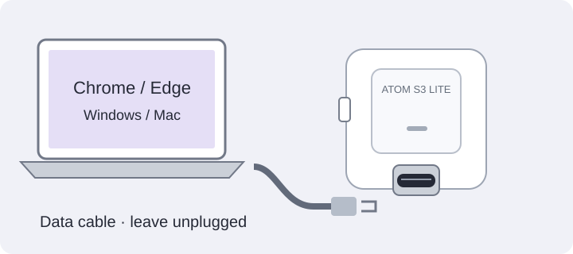
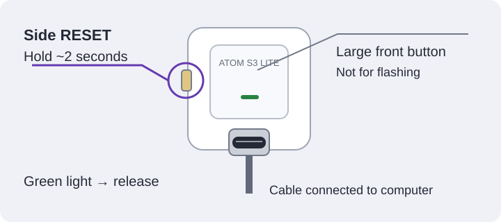
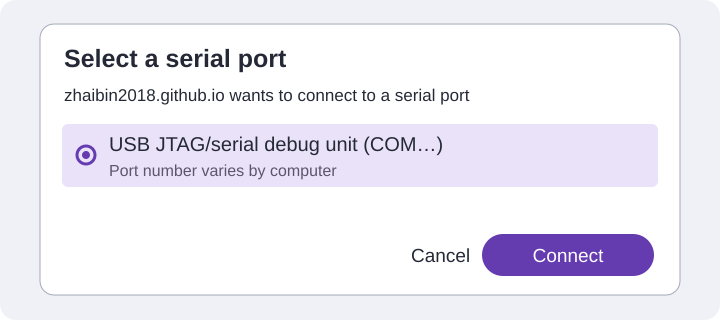
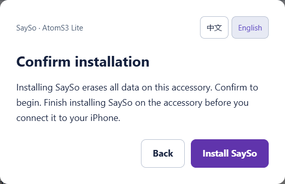
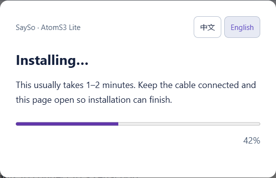
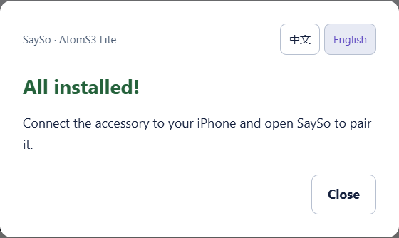
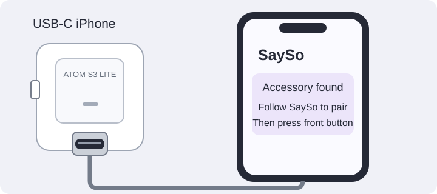

Set up the accessory
Continue on a computer
Tap “Copy link to open on a computer”, then open the link in Chrome or Edge on your computer. The installation tool needs a browser that can connect to the accessory by USB.
Preview the installation steps below.
SaySo uses an M5Stack AtomS3 Lite accessory that you buy separately. Follow the three steps below to install SaySo on it. Installation usually takes 1–2 minutes.
Tapping for you requires an iPhone with USB-C (iPhone 15 or later). ChatGPT can also see your screen on Lightning iPhones.
Reinstalling clears the accessory’s previous pairing. When installation finishes, pair the accessory with your iPhone again.
Select an image to see it larger.
Prepare a computer and data cable
Open this page in Chrome or Edge on a Windows PC or Mac so the browser can connect to the accessory. Use a cable that can transfer files, since the installer sends the installation file over USB. Finish installing SaySo on the accessory before you connect it to your iPhone.

Look for the white square AtomS3 Lite with a large button on the front and a small reset button on the side. Connect to the computer and enter download mode
- Connect the accessory to your computer with the data cable.
- Hold the small side reset button for about 2 seconds until the internal green light comes on, then release to enter download mode.
- When you release, the green light turns off. That’s normal: the accessory is now in download mode. Leave the cable connected so the browser can find the accessory in step 3.

The green light is on while you hold the side reset button and turns off when you release it. Use the front button later, for pairing. Select the accessory and install
Open the copied link in Chrome or Edge on your computer, then click “Start installation”.
Click “Start installation” to open the port chooser. Select the accessory you just connected, then click “Connect” so the installer can access it.
Checking the installation file…

Example serial port chooser. Port names and numbers vary by computer. Do not choose PCI Serial Port. That’s a built-in port on your computer, not the accessory. Look for USB JTAG/serial debug unit. If it is missing, cancel, try another data cable or USB port, then repeat step 2 to make the accessory appear.

Confirm installation to begin. Installing SaySo erases all data on this accessory. 
Installation and checking usually take 1–2 minutes. Keep the cable connected and the page open so installation can finish. 
“All installed!” confirms that the accessory is ready to pair. Example screens. Your computer may look slightly different.
Pair with your iPhone
Unplug the accessory, connect it to your unlocked USB‑C iPhone and open SaySo so it can detect the accessory.
When “SaySo accessory found” appears, tap “Start pairing”. When the light flashes, press the front button once to confirm you’re pairing the accessory in your hand. SaySo shows when pairing is complete.

If SaySo shows “Paired with another iPhone”, connect the accessory to the original iPhone. In SaySo, go to Settings → “SaySo accessory” and tap “Remove accessory”.
If you can’t use the original iPhone, follow the installation steps on this page to reset the accessory, then pair again.
If your iPhone asks “Accessory was reset. Pair again?”, tap “Pair again”.
Follow the AssistiveTouch steps in Get started so the accessory can tap the screen.
Can’t find the accessory, or stuck preparing?
Try another data cable or USB port, then repeat step 2 to enter download mode.
Close any apps that may be using the serial port, such as Arduino IDE, then repeat step 2.